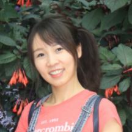

Correlation is not causality. However, this common sense is often surprisingly ignored in most of today’s computer vision systems, including classification, detection, segmentation, and vision-language models, because they are merely trained on correlated sample-label pairs, and the resultant models are nothing short of a likelihood lookup table --- we cannot expect them to generalize to unseen data distribution, not mentioning to more human-level tasks such as modularization, interpretation, and imagination. What is even more regrettable in our community is that we usually blame the poor generalization for insufficient data, and thus some of us may be trapped in the infinite loop: “make a large dataset”---“over-fitted”---“make a larger one’’.
Causality is a new science of data generation, model training, and inference. Only by understanding the data causality, we can remove the spurious bias, disentangle the desired model effects, and modularize reusable features that generalize well. We deeply feel that it is a pressing demand for our CV community to adopt causality and use it as a new mind to re-think the hype of feeding big data into gigantic deep models.
The goal of this workshop is to provide a comprehensive yet accessible overview of existing causality research and to help CV researchers to know why and how to apply causality in their own work. We aim to invite speakers from this area to present their latest works and propose new challenges.
| David Lopez-Paz (Facebook AI Research Paris) |
Irina Higgins (Deepmind) |
Kun Zhang (CMU) |
| Yulei Niu (Columbia University) | Hanwang Zhang (Nanyang Technological University) | Peng Cui (Tsinghua University) | Song-Chun Zhu (University of California, Los Angeles) |
|  | |||
| Qianru Sun (Singapore Management University) | Mike Zheng Shou (National University of Singapore) | Kaihua Tang (Nanyang Technological University) |
TBD